<title>Halloween Pet Previews</title>
<meta name="claude:viewport-fit-sides" content="cover">
<link rel="stylesheet" href="https://fonts.googleapis.com/css2?family=Baloo+2:wght@600;800&family=Nunito+Sans:wght@400;600&display=swap">
<style>
/* layout: one column, one section per Halloween pet; each pet = level sheet, views, animation clip, later an in-game still */
:root{--bg:#f3eee8;--panel:#ffffff;--fg:#1e1712;--muted:#665a50;--accent:#c4520e;--line:#e2d8cd;
--display:"Baloo 2",system-ui,sans-serif;--body:"Nunito Sans",system-ui,sans-serif}
@media (prefers-color-scheme:dark){:root:not([data-theme="light"]){--bg:#120d0a;--panel:#1d1612;--fg:#f0e8e0;--muted:#ab9d90;--accent:#ff8a2a;--line:#33281f;color-scheme:dark}}
:root[data-theme="dark"]{--bg:#120d0a;--panel:#1d1612;--fg:#f0e8e0;--muted:#ab9d90;--accent:#ff8a2a;--line:#33281f;color-scheme:dark}
body{background:var(--bg);color:var(--fg);font-family:var(--body);font-size:15px;line-height:1.5;
padding-left:max(16px,env(safe-area-inset-left,0px));padding-right:max(16px,env(safe-area-inset-right,0px));padding-block:20px}
main{max-width:760px;margin:0 auto;display:flex;flex-direction:column;gap:22px}
h1{font-family:var(--display);font-weight:800;font-size:1.7rem;margin:0;text-wrap:balance}
.lede{color:var(--muted);margin:0}
section{display:flex;flex-direction:column;gap:12px}
.head{display:flex;flex-direction:column;gap:2px}
.tag{font-size:.72rem;letter-spacing:.08em;text-transform:uppercase;color:var(--accent);font-weight:600}
h2{font-family:var(--display);font-weight:600;font-size:1.3rem;margin:0}
figure{margin:0;background:var(--panel);border:1px solid var(--line);border-radius:12px;overflow:hidden}
figure img,figure video{display:block;width:100%;height:auto;max-width:100%}
figcaption{padding:10px 12px;color:var(--muted);font-size:.9rem}
.ask{background:var(--panel);border:1px solid var(--line);border-left:4px solid var(--accent);border-radius:12px;padding:12px 14px;margin:0}
</style>
<main>
<h1>Halloween Pet Previews</h1>
<p class="lede">The three limited-time Halloween pets for the Featured store (until Nov 1). All three are installed in the place and sold on the Featured page (not published: the place is never saved or published from here).</p>

<section id="jack-o-lantern">
<div class="head"><span class="tag">Invisibility · Legendary · 399 Robux · installed</span><h2>Jack-o'-Lantern (replaces the Pumpkin Wraith)</h2></div>
<p class="ask">Same pet, slot and price, now just the pumpkin: a floating carved jack-o'-lantern with the same slit eyes and jagged grin, a curled stem and leaves, vine-tendril arms with thorn hooks, root tendrils trailing underneath. Its ember and grin effects stay.</p>
<figure>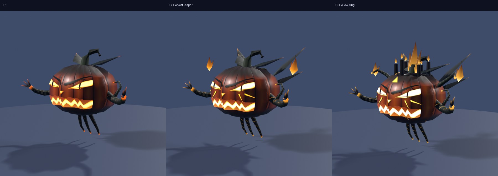<figcaption>L1 · L2 "Harvest Reaper": thorned vines creeping down its back and sides, leaf-blade wings, ember wisps · L3 "Hollow King": a crown of black candles with ember flames, soul flame out of the lid, an extra pair of thorn vines. 970 / 1,254 / 1,670 tris.</figcaption></figure>
<figure>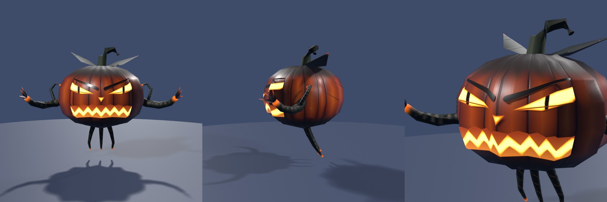<figcaption>Front, side and face close-up at L1.</figcaption></figure>
<figure><video src="jack_o_lantern/anims.mp4" controls muted loop playsinline></video><figcaption>At L3: idle hover, flight, Vanish (Runner: vines over its face, spins, flares) and Stalk (Catcher: lashes a vine forward).</figcaption></figure>
<figure>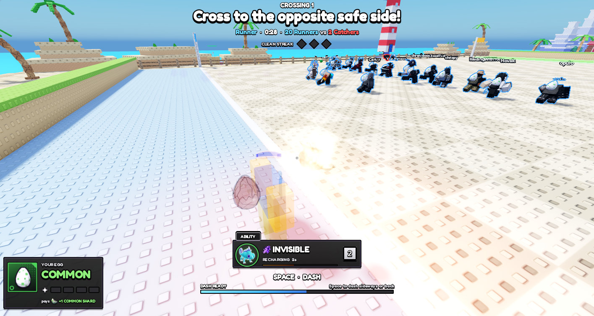<figcaption>In a Studio playtest match: the Jack-o'-Lantern following, and its Runner ability turning you invisible with the ember summon.</figcaption></figure>
</section>

<section id="bone-dragon">
<div class="head"><span class="tag">Tempest · Legendary · 399 Robux · installed, on sale from Oct 24</span><h2>Bone Dragon</h2></div>
<figure>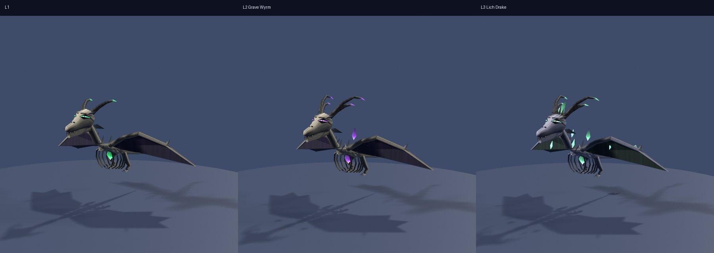<figcaption>L1: a flying skeletal drake, a horned skull with a hinged jaw and fangs, narrow green soul-fire slits in the sockets, a vertebra neck and tail with dorsal spikes, an open ribcage with a soul-fire heart, bone wings with a torn dark membrane, tucked hind legs. L2 "Grave Wyrm": longer horns, a second spike row, glowing rune cracks, violet fire. L3 "Lich Drake": a crown of black horns, soul flames off the skull and tail blade, orbiting bone shards, pale-green fire. 1,590 / 1,814 / 1,918 tris.</figcaption></figure>
<figure>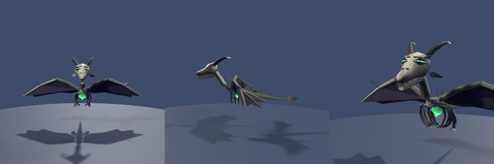<figcaption>Front, side and head close-up at L1.</figcaption></figure>
<figure><video src="bone_dragon/anims.mp4" controls muted loop playsinline></video><figcaption>At L3: idle hover with wing beats, flight, Knockback (Runner: rears, slams down in a wing beat, jaw wide) and Soul Storm (Catcher: draws back and spits the storm ball).</figcaption></figure>
<figure>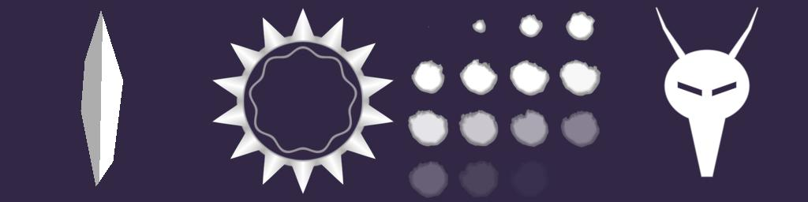<figcaption>Its own effect textures (drawn): a bone shard, the knockback ring of bone shards, a soul-fire ball flipbook for the storm ball, a dragon-skull flash. Built into its own Tempest effects (same sizes and timing as the family).</figcaption></figure>
<figure>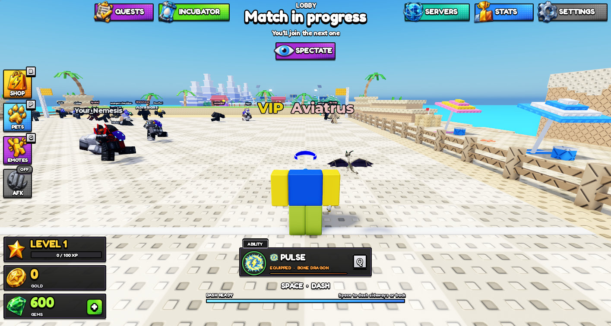<figcaption>In a Studio playtest: the Bone Dragon following you, ability card PULSE.</figcaption></figure>
</section>

<section id="pumpkin-wraith">
<div class="head"><span class="tag">Invisibility · Legendary · 399 Robux · installed</span><h2>Pumpkin Wraith</h2></div>
<p class="ask">Pass 2: the hood is now a cowl draped over the top of the pumpkin with the face shadowed inside it, at all three levels. The L3 crown sits on the hood.</p>
<figure>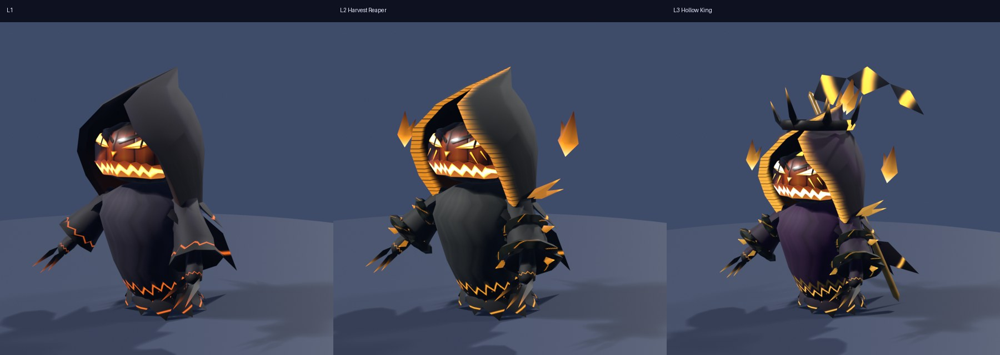<figcaption>L1: a hooded wraith with a scorched jack-o'-lantern head, narrow carved slit eyes and a jagged fanged grin cut, a tattered cloak with burning hems and black claws. L2 "Harvest Reaper": thorned vines round the sleeves, leaf-blade pauldrons, ember wisps, a glowing hood stitch. L3 "Hollow King": a black thorn crown, soul flame out of the hood peak, a gold-trimmed plum cloak and a scythe floating behind it. 1,046 / 1,462 / 1,730 tris (cap 2,000).</figcaption></figure>
<figure>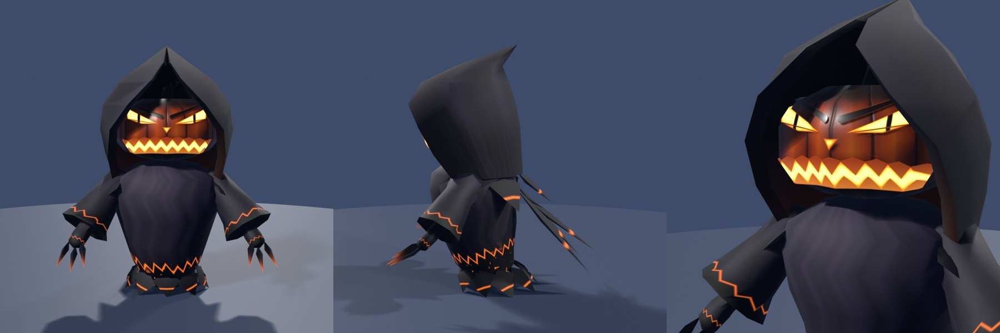<figcaption>Front, side and a head close-up at L1. No legs: it floats.</figcaption></figure>
<figure><video src="pumpkin_wraith/anims.mp4" controls muted loop playsinline></video><figcaption>At L3: idle hover, flight, fast flight, Vanish (Runner: draws its sleeves over its face, spins, bursts open) and Stalk (Catcher: rears and lunges a claw). </figcaption></figure>
<figure>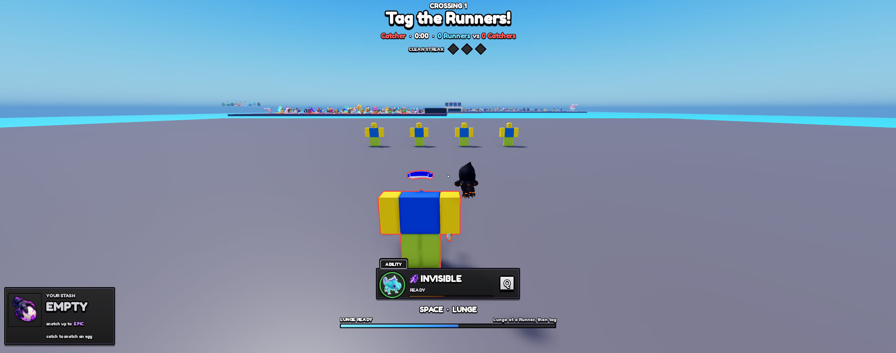<figcaption>In a Studio playtest: the Wraith following at your right shoulder.</figcaption></figure>
<figure>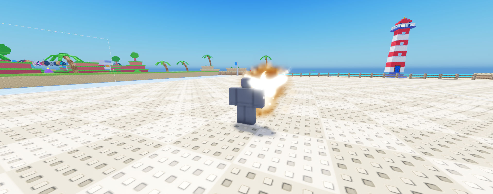<figcaption>Its ability effect at L3 (Catcher side): an ember burst with smoke and the jack-o'-lantern grin afterimage. Pressing the ability in the playtest turned the player invisible with this summon.</figcaption></figure>
</section>

<section id="witch-cat">
<div class="head"><span class="tag">Decoy · Epic · 250 Gems · installed</span><h2>Witch's Cat</h2></div>
<figure>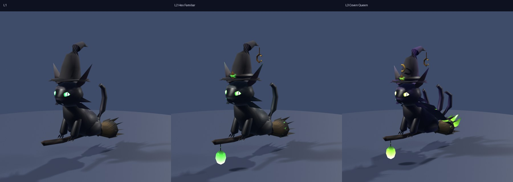<figcaption>L1: a lean black cat in a crooked witch hat riding a broom (the broom floats, no walking), tall swept ears, sharp cheek tufts, narrow green slit eyes, a one-sided smirk with a fang. L2 "Hex Familiar": hat band with a gold buckle, a crescent charm off the hat tip, a glowing potion vial off the broom, whisker marks. L3 "Coven Queen": a violet cape, two extra forked tails, green hex flame in the bristles, a moon emblem. 1,047 / 1,277 / 1,501 tris.</figcaption></figure>
<figure>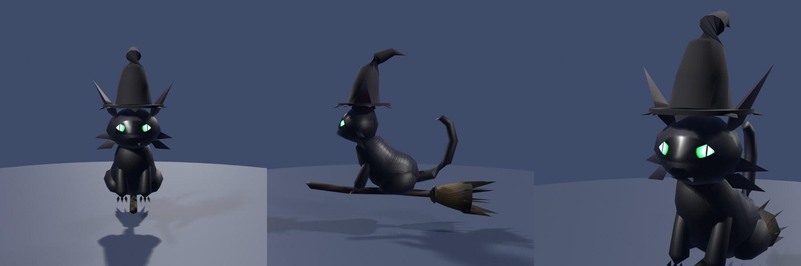<figcaption>Front, side and head close-up at L1.</figcaption></figure>
<figure><video src="witch_cat/anims.mp4" controls muted loop playsinline></video><figcaption>At L3: idle hover, flight, Fake Clone (Runner: barrel-rolls the broom and tips its hat) and Snare (Catcher: stabs the broom down to brew the hex circle).</figcaption></figure>
<figure>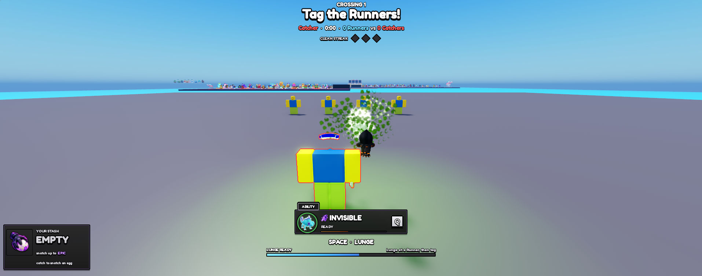<figcaption>In a Studio playtest: its L3 summon, a burst of green cauldron smoke.</figcaption></figure>
</section>

<section id="mummy">
<div class="head"><span class="tag">Guardian · Epic · 250 Gems · installed</span><h2>Mummy</h2></div>
<figure>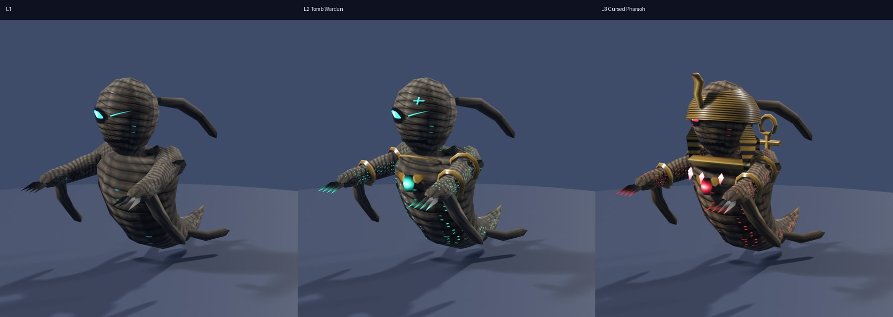<figcaption>L1: a hunched floating mummy in grimy dark wraps, its lower body unravelling into a trailing bandage tail (it hovers like the other floaters), long reaching clawed arms, loose strips off the wrists, head and back, one glowing cyan slit eye through a torn gap in the face wraps. L2 "Tomb Warden": gold cuffs, a scarab amulet, glowing glyphs in the wraps. L3 "Cursed Pharaoh": a striped nemes headdress with a gold cobra, a jewelled broad collar, an orbiting ankh, a crimson eye. 944 / 1,400 / 1,842 tris.</figcaption></figure>
<figure>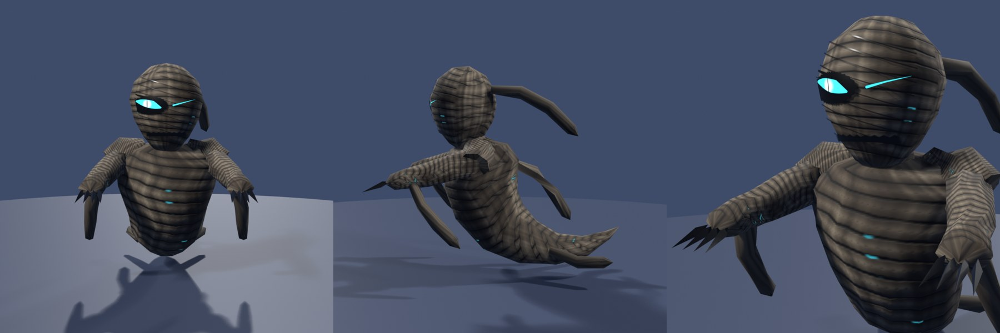<figcaption>Front, side and head close-up at L1.</figcaption></figure>
<figure><video src="mummy/anims.mp4" controls muted loop playsinline></video><figcaption>At L3: idle hover, flight, Shield (Runner: crosses its arms, then throws them wide as the wrap whips round) and Bandage Lash (Catcher: whips its arm forward, hauls back).</figcaption></figure>
<figure>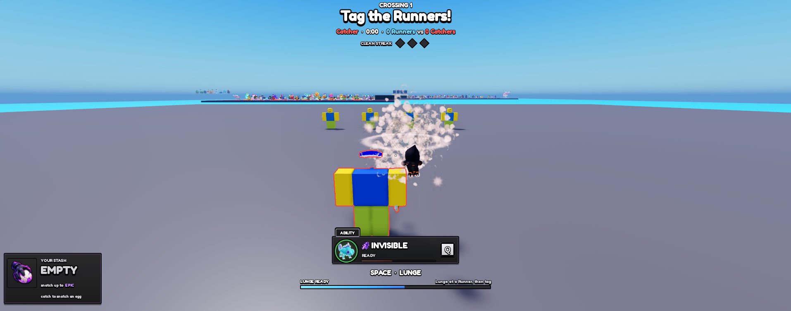<figcaption>In a Studio playtest: its L3 summon, a swirl of bandage dust.</figcaption></figure>
</section>

<section id="effects-v2">
<div class="head"><span class="tag">Ability effects v2 · each pet's own</span><h2>Halloween effects</h2></div>
<p class="ask">Each pet now has its own ability effects, no longer a recolour of its family's set. Sizes and timing match the family's effects; the Mummy's shield is player-sized and lasts 1 s. Left of each frame is L1, right is L3.</p>
<figure><video src="halloween_vfx_v2.mp4" controls muted loop playsinline></video><figcaption>Frame by frame (stepped and held so it reads on a phone): Wraith Vanish and Stalk, Cat Fake Clone and Snare, Mummy Shield, its bubble and the Bandage Lash.</figcaption></figure>
<figure>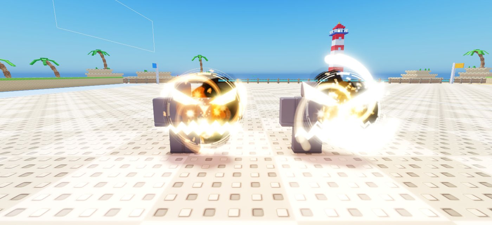<figcaption>Pumpkin Wraith: an ember spiral winds up, a carved jack-o'-lantern grin flashes inside charcoal smoke, cinders rise. L3 is white-gold with two swirls. The Catcher side shows the grin too (no moon crescent any more).</figcaption></figure>
<figure>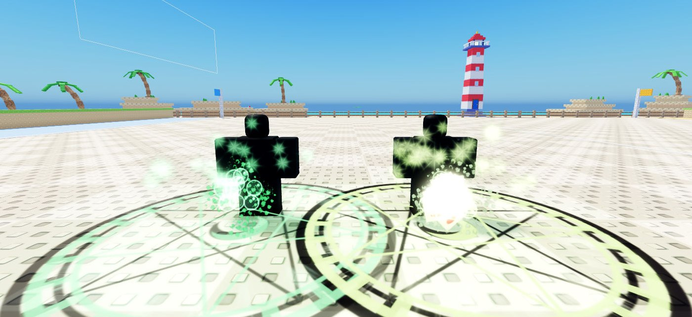<figcaption>Witch's Cat: its snare is a witch's hex circle (same size and timing as the family's snare). Fake Clone: a spinning hex sigil, cauldron puffs and rising bubbles; L3 adds a second gold sigil.</figcaption></figure>
<figure>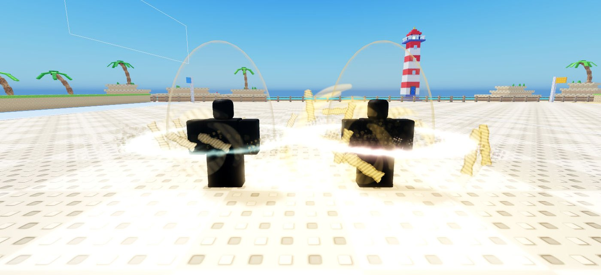<figcaption>Mummy: a bandage wrap swirls in for the shield, then a linen shell at player size with strips circling and sand drifting for its 1 s. The tether beam is a scrolling bandage, and the lash throws strips and sand.</figcaption></figure>
</section>

<section id="rotation">
<div class="head"><span class="tag">Featured store · from Oct 24 · HTML mock</span><h2>Bone Dragon rotation</h2></div>
<p class="ask">Until Oct 24: Jack-o'-Lantern, Witch's Cat, Mummy. From Oct 24 00:00 UTC to Nov 1: Bone Dragon (NEW), Jack-o'-Lantern and the Mummy, as Hunter asked; the Witch's Cat leaves Featured that week (anyone who bought it keeps it). The dates live in the shop config.</p>
<figure>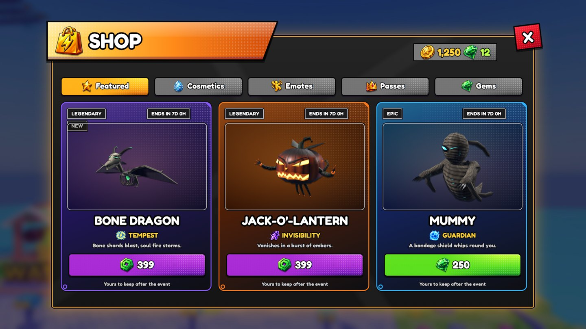<figcaption>From Oct 24: Bone Dragon (NEW) · Jack-o'-Lantern · Mummy (HTML).</figcaption></figure>
<figure>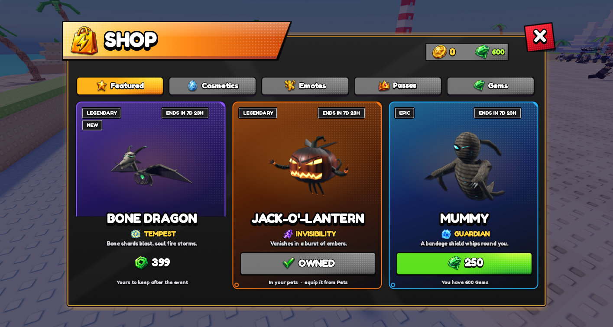<figcaption>The real shop in a Studio playtest with the test clock set to Oct 24: Bone Dragon NEW, Jack-o'-Lantern owned, Mummy for 250 Gems. (The Dragon card's background was fixed after this shot.)</figcaption></figure>
<figure>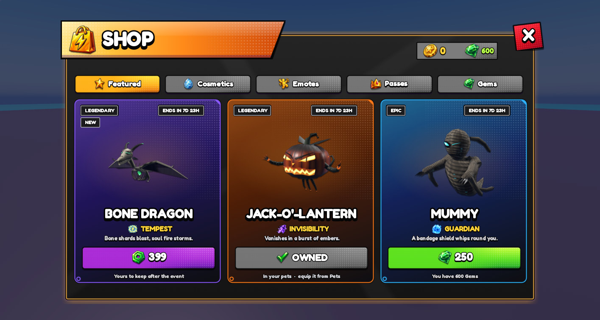<figcaption>Fixed (Hunter: "dragon frame is cut half"): the Bone Dragon card's purple frame now runs the full height like the others. Real shop in a Studio playtest, test clock Oct 24.</figcaption></figure>
</section>

<section id="store">
<div class="head"><span class="tag">Featured store · live in the place</span><h2>Store cards</h2></div>
<p class="ask">Store look check: until Nov 1 the three pets take over the Featured page (the weekly colourway and spotlight come back after).</p>
<figure>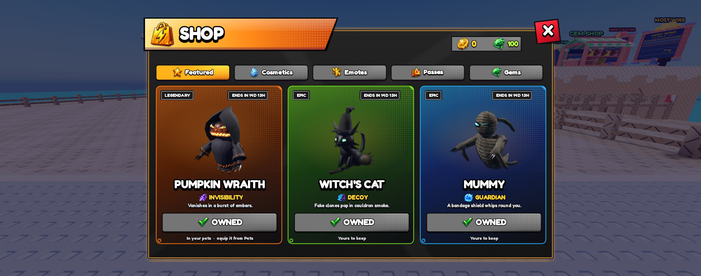<figcaption>In a Studio playtest: the real Shop with the three cards and the live countdown, after buying all three on a test profile (all OWNED).</figcaption></figure>
<figure>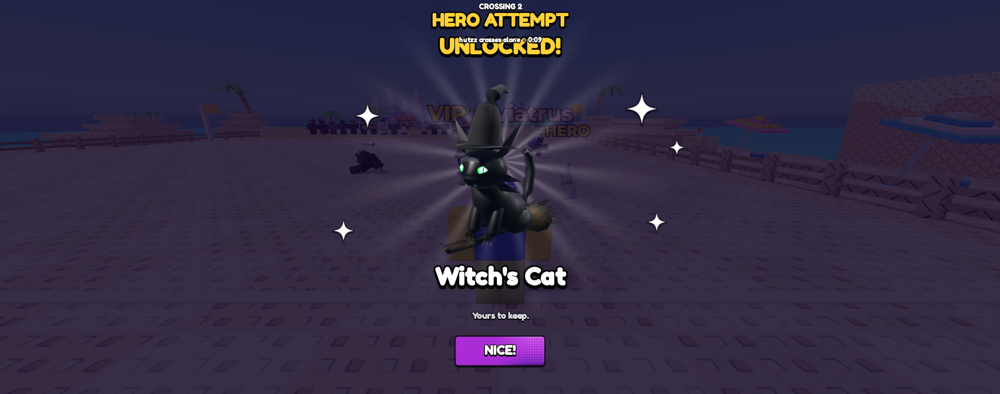<figcaption>Buying the Witch's Cat with Gems through the real shop request: the UNLOCKED! reward.</figcaption></figure>
<figure>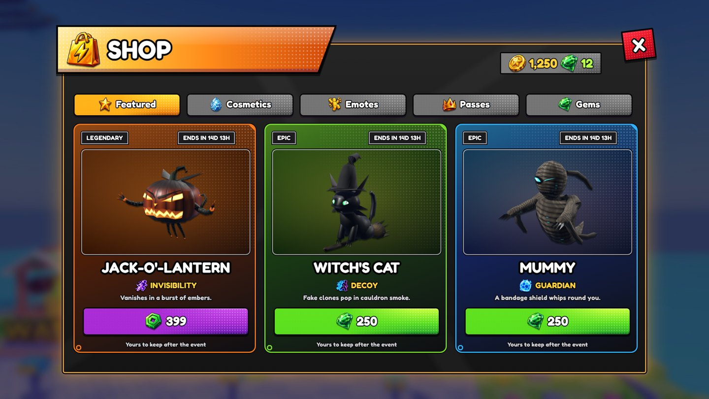<figcaption>The HTML design the cards were built from. Each card: rarity, a live countdown to Nov 1, the pet, its ability family and one price button (the Wraith is Robux only; the Cat and the Mummy cost Gems).</figcaption></figure>
<figure>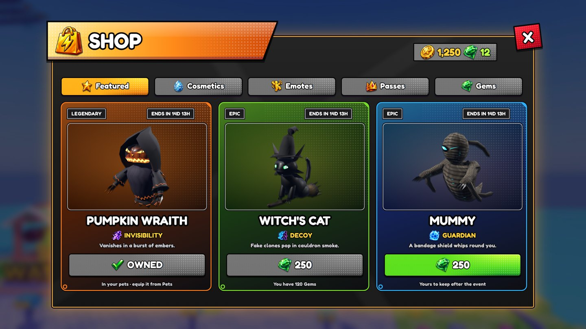<figcaption>States: the Wraith already owned, short on Gems for the Cat (grey; tapping it offers Gems), the Mummy buyable.</figcaption></figure>
</section>
</main>
